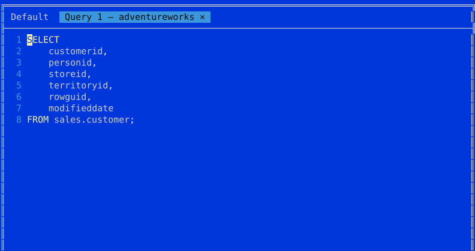
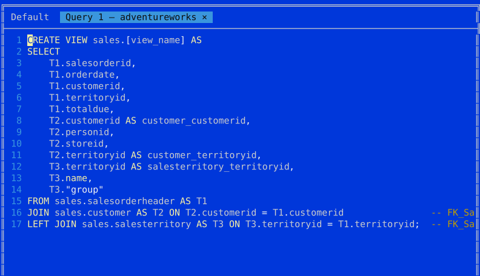

psql-style and generate commands (F4)
A command line inside the query tab: psql's everyday commands for listing and describing objects, and pgtc's own commands that write SQL for a table — SELECT, INSERT, UPDATE, upsert, MERGE, cursor loops, triggers and views.
The command line

- In a connected query tab, press F4 (Esc 4, or ). It works from the editor and from the results.
- Type a command, for example
dt sales.*. - Press Enter (Run).
The commands are the backslash commands of psql, without the backslash: psql's \dt sales.* is
dt sales.* here — F4 has already said “this is a command”. If you type the backslash out of
habit, it is ignored.
The list under the input
You do not have to know the commands by heart. The list shows all of them, pgtc's own after a separator line.
- Up / Down / PgUp / PgDn move in the list — also while the cursor is in the input — and the mouse wheel scrolls it.
- Choosing a row puts its command into the input (followed by a space when it takes an argument), ready for you to add the name or pattern.
- When you type a command, the list moves to it. The list is never shortened.
- Enter with an empty input runs the selected command.
- Esc closes the window.
Completing names
In the input, Ctrl+Space or Alt+/ completes the argument — the name after the command.
It offers the kinds of objects that make sense for the command: tables for dt, views for dv,
tables and views for d and the generate commands, nothing for commands like df or
du.
- Names you can use without a schema are offered plain (
orders); others with their schema (sales.customer). Typingsales.cnarrows the list to that schema. - Enter puts the name into the input — it does not run the command yet. Esc closes only the list.
- The names are the same ones the editor's autocomplete uses.
There is no history of commands.
List commands
| Command | Lists |
|---|---|
l | Databases |
dn | Schemas |
dt | Tables |
dv | Views |
dm | Materialized views |
di | Indexes |
ds | Sequences |
df | Functions |
dT | Data types |
dD | Domains |
du, dg | Roles |
dx | Extensions |
db | Tablespaces |
dp | Access privileges of tables, views and sequences |
d (without a name) | Tables, views, materialized views, sequences and foreign tables together |
Upper and lower case matter in command names, as in psql: dt lists tables, dT lists types.

dt sales.*: the tables of schema sales. The result set is labelled with the
command.A command runs like F5: the answer is a normal result set of the tab. You can move in it, copy from it and export it. The editor text is not touched.
Combining, system objects, more columns
| Write | Meaning | Example |
|---|---|---|
Several letters after d | The letters t v m i s (and E for foreign tables) combine. | dtv — tables and views |
S | Include system objects. Without a pattern, a list leaves out the system schemas. | dtS, dfS pg_get* |
+ | More columns: size, description, … | dt+, l+ |
Patterns
Every list command takes an optional pattern that says which names to list. The rules are psql's:
| Pattern | Matches |
|---|---|
customer | The name customer, in the schemas of your search path. |
sales* | Names that start with sales. * stands for any text. |
*territory* | Names that contain territory. |
sales?erson | ? stands for exactly one character. |
sales.* | Everything in schema sales. |
*.customer | customer in any schema. |
s*.sales* | Both parts can have wildcards. |
"Order Items" | In double quotes: exactly this name, with its capitals and spaces. Without quotes, a pattern is compared in lower case. |
dt tables on the search path
dt sales.* all tables of schema sales
dtv+ *order* tables and views with "order" in the name, with sizes
df *price* functions with "price" in the name
dn schemas
du roles
dp sales.customer who may do what with sales.customerDescribing one object: d name

d sales.customer: four result sets. Columns is shown; Ctrl+PgDn goes to
Indexes and Constraints.d with a name describes one table, view, materialized view, sequence or foreign table. The answer is
several result sets, one for each part:
| Result set | Columns |
|---|---|
| Relation | Schema, name, type, owner, description. |
| Columns | Column, type, collation, nullable (not null), default. With d+ also storage and description. |
| Indexes | Name, kind (primary key, unique, index), definition. |
| Constraints | Name, type, definition — foreign keys, checks, … |
| Triggers | The triggers of the table. |
| Definition | For a view: its query. |
- A part that has nothing — a table without triggers — is left out.
- Switch between the parts with Ctrl+PgDn / Ctrl+PgUp, or in the results with Alt+Right / Alt+Left.
- Without a schema, the name is looked for on your search path. If nothing is found, Messages says Did not find any relation named "…".
ddescribes one object: a pattern with*or?is refused, with the hint to usedtand its relatives.
For the complete CREATE TABLE statement, select the table in the tree instead — see
Object view. d is quicker when you are typing a query and want to see the
columns without leaving the tab.
conninfo and ?
| Command | What it does |
|---|---|
conninfo | Writes into Messages where the tab is connected: You are connected to database "adventureworks" as user "postgres" on host "localhost" at port "5432" (SSL mode prefer). and the server version. |
? | Lists all commands as a result set — the same list as in the window, but one you can copy or export. |
What is not there
pgtc is not psql. These psql commands have no counterpart: \c (a query tab belongs to one database —
open another tab), \i and \o (use Open SQL file and
Export result), \copy, \x, \h, \set,
\password, \g, \watch, \if. A line starting with \ inside a
SQL script is not a command; the server will report a syntax error.
Generate commands: SQL for a table
The commands below the separator are pgtc's own. Each one reads the definition of a table from the database and writes a statement for it into the editor, at the cursor. Nothing is run. You get every column name and type right without typing them.
| Command | Writes | Works on |
|---|---|---|
gts table | SELECT with every column | tables, views, foreign tables |
gti table | INSERT | tables, views, foreign tables |
gtu table | UPDATE … WHERE key | tables, views, foreign tables |
gtd table | DELETE … WHERE key | tables, views, foreign tables |
gto table | Upsert: INSERT … ON CONFLICT … DO UPDATE | tables, views, foreign tables |
gtm table | MERGE (PostgreSQL 15 and newer) | tables |
gtc table | PL/pgSQL: a cursor loop over the table | tables, views, foreign tables |
gtsi table | PL/pgSQL: variables and SELECT … INTO for one row | tables, views, foreign tables |
gtrb, gtra table | A trigger function and a row trigger, before / after | tables |
gtsb, gtsa table | A trigger function and a statement trigger, before / after | tables |
gtv table table … | CREATE VIEW joining the tables on their foreign keys | tables, views, foreign tables |
The names are easy to remember: generate table + select, insert, update, delete, on conflict, merge, cursor, select into, view; and for triggers row / statement, before / after.
How to use one
- Put the editor cursor where the statement should go.
- Press F4, type the command and the table —
gtu sales.customer— and press Enter. (Ctrl+Space completes the table name.) - The statement is in the editor. Replace every
[placeholder]with a value, delete the lines you do not need, and run it with F5.
- The table name:
customer,sales.customeror"Order Items". Without a schema, the table is looked for on your search path. The generated statement always names the table with its schema. - Placeholders: every value you must supply is written as
[column]. That is not valid SQL — on purpose: a statement you forgot to fill in cannot run by accident. - Comments: each column has a comment with its type,
NOT NULLand its default, so you see what is expected and which lines you may leave out. - The key: where a statement needs to find one row, it uses the primary key. A table without one
uses a unique constraint whose columns are all
NOT NULL(the comment says so). With neither, you getWHERE [condition] -- no primary key: write a condition. - If no such table exists: Did not find a table named "…", and nothing is inserted.
- While a result of the tab is paused (more rows available) or an export runs, the generate commands are refused — finish or close the result first.
All examples below are what pgtc writes for sales.customer: six columns, customerid is the
primary key and gets its value from a sequence.
gts — SELECT

gts sales.customer." loading="lazy">gts sales.customer.SELECT
customerid,
personid,
storeid,
territoryid,
rowguid,
modifieddate
FROM sales.customer;Every column on its own line and no WHERE: delete the lines you do not want and add your condition.
gti — INSERT

gti sales.customer.INSERT INTO sales.customer (
personid, -- integer
storeid, -- integer
territoryid, -- integer
rowguid, -- uuid, NOT NULL, default uuid_generate_v1()
modifieddate -- timestamp without time zone, NOT NULL, default now()
) VALUES (
[personid],
[storeid],
[territoryid],
[rowguid],
[modifieddate]
);Left out are only the columns the database fills by itself: generated columns, identity columns, and columns
whose default takes the next value of a sequence (serial) — here customerid. Columns with any
other default are listed with the default in the comment: delete rowguid and modifieddate (in
both lists) if the defaults are what you want.
gtu — UPDATE, gtd — DELETE

gtu sales.customer.UPDATE sales.customer SET
personid = [personid], -- integer
storeid = [storeid], -- integer
territoryid = [territoryid], -- integer
rowguid = [rowguid], -- uuid, NOT NULL
modifieddate = [modifieddate] -- timestamp without time zone, NOT NULL
WHERE customerid = [customerid]; -- primary key: integer
DELETE FROM sales.customer
WHERE customerid = [customerid]; -- primary key: integerThe WHERE is on the key (several key columns are joined with AND). UPDATE sets
every other column except generated ones and GENERATED ALWAYS identity columns; keep the lines for the
columns you really change.
gto — upsert (INSERT … ON CONFLICT)

gto sales.customer (the statement continues below the screen).INSERT INTO sales.customer (
customerid, -- integer, NOT NULL, default nextval('sales.customer_customerid_seq'::regclass)
personid, -- integer
storeid, -- integer
territoryid, -- integer
rowguid, -- uuid, NOT NULL, default uuid_generate_v1()
modifieddate -- timestamp without time zone, NOT NULL, default now()
) VALUES (
[customerid],
[personid],
[storeid],
[territoryid],
[rowguid],
[modifieddate]
)
ON CONFLICT (customerid) DO UPDATE SET -- primary key
personid = EXCLUDED.personid,
storeid = EXCLUDED.storeid,
territoryid = EXCLUDED.territoryid,
rowguid = EXCLUDED.rowguid,
modifieddate = EXCLUDED.modifieddate;“Insert the row; if a row with this key exists, update it.” Unlike gti, the key column is listed even
though a sequence could fill it — without a key value the row would never conflict. A table whose columns are all
key columns gets DO NOTHING; a table without a key gets ON CONFLICT DO NOTHING and a comment
asking you to write the conflict target.
gtm — MERGE
MERGE INTO sales.customer AS t
USING (VALUES (
[customerid]::integer, -- integer, NOT NULL, default nextval(…)
[personid]::integer, -- integer
[storeid]::integer, -- integer
[territoryid]::integer, -- integer
[rowguid]::uuid, -- uuid, NOT NULL, default uuid_generate_v1()
[modifieddate]::timestamp without time zone -- timestamp without time zone, NOT NULL, default now()
)) AS s (customerid, personid, storeid, territoryid, rowguid, modifieddate)
ON t.customerid = s.customerid -- primary key
WHEN MATCHED THEN
UPDATE SET
personid = s.personid,
storeid = s.storeid,
territoryid = s.territoryid,
rowguid = s.rowguid,
modifieddate = s.modifieddate
WHEN NOT MATCHED THEN
INSERT (customerid, personid, storeid, territoryid, rowguid, modifieddate)
VALUES (s.customerid, s.personid, s.storeid, s.territoryid, s.rowguid, s.modifieddate);The standard-SQL form of the upsert. Every value is cast to the type of its column, because a bare
VALUES row would otherwise be read as text. To merge several rows, repeat the parenthesised row in
VALUES; to merge from a table, replace the whole USING (…) with it.
- Needs PostgreSQL 15; on an older server the command answers MERGE needs PostgreSQL 15 or later.
- There is deliberately no
WHEN NOT MATCHED BY SOURCEbranch: it would delete every row of the table that is not in yourVALUES.
gtc — cursor loop (PL/pgSQL)
DECLARE
cur CURSOR FOR
SELECT
customerid,
personid,
storeid,
territoryid,
rowguid,
modifieddate
FROM sales.customer;
rec record;
BEGIN
OPEN cur;
LOOP
FETCH cur INTO rec;
EXIT WHEN NOT FOUND;
-- rec.customerid integer, NOT NULL
-- rec.personid integer
-- rec.storeid integer
-- rec.territoryid integer
-- rec.rowguid uuid, NOT NULL
-- rec.modifieddate timestamp without time zone, NOT NULL
--PROCESS THE ROW HERE
END LOOP;
CLOSE cur;
END;A block that goes through the table row by row. The comments list the fields of rec; write your code
at --PROCESS THE ROW HERE. The block has no placeholders and runs as it is — in a tab in
PL/pgSQL mode (Ctrl+P), or pasted into the body of a function.
gtsi — read one row into variables (PL/pgSQL)
DECLARE
v_customerid sales.customer.customerid%TYPE;
v_personid sales.customer.personid%TYPE;
v_storeid sales.customer.storeid%TYPE;
v_territoryid sales.customer.territoryid%TYPE;
v_rowguid sales.customer.rowguid%TYPE;
v_modifieddate sales.customer.modifieddate%TYPE;
BEGIN
SELECT
customerid,
personid,
storeid,
territoryid,
rowguid,
modifieddate
INTO STRICT
v_customerid,
v_personid,
v_storeid,
v_territoryid,
v_rowguid,
v_modifieddate
FROM sales.customer
WHERE customerid = [customerid]; -- primary key: integer
--PROCESS THE ROW HERE
END;One variable per column, each declared with the type of its column (%TYPE), so the code stays correct
when a column type changes. INTO STRICT raises an error unless exactly one row is found. A column name
that is not a plain identifier becomes a usable variable name: "Due Date" gives v_due_date.
gtrb, gtra, gtsb, gtsa — trigger function and trigger
CREATE OR REPLACE FUNCTION sales.[function_name]()
RETURNS trigger
LANGUAGE plpgsql
AS $$
BEGIN
-- NEW. / OLD.customerid integer, NOT NULL
-- NEW. / OLD.personid integer
-- NEW. / OLD.storeid integer
-- NEW. / OLD.territoryid integer
-- NEW. / OLD.rowguid uuid, NOT NULL
-- NEW. / OLD.modifieddate timestamp without time zone, NOT NULL
IF TG_OP = 'INSERT' THEN
--PROCESS NEW HERE
RETURN NEW;
ELSIF TG_OP = 'UPDATE' THEN
--PROCESS OLD AND NEW HERE
RETURN NEW;
ELSIF TG_OP = 'DELETE' THEN
--PROCESS OLD HERE
RETURN OLD;
END IF;
RETURN NULL; -- NULL skips the row
END;
$$;
CREATE TRIGGER customer_rb_trg
BEFORE INSERT OR UPDATE OR DELETE ON sales.customer
FOR EACH ROW EXECUTE FUNCTION sales.[function_name]();This is gtrb sales.customer: a row trigger that fires before each insert, update and
delete. The four commands differ like this:
| Command | Fires | Trigger name | The function |
|---|---|---|---|
gtrb | BEFORE … FOR EACH ROW | customer_rb_trg | Lists the NEW. / OLD. fields; returns NEW or OLD in each branch — what it returns is what gets stored, and NULL skips the row. |
gtra | AFTER … FOR EACH ROW | customer_ra_trg | Lists the fields; no RETURN in the branches — the result of an AFTER trigger is ignored. |
gtsb | BEFORE … FOR EACH STATEMENT | customer_sb_trg | No fields (a statement trigger has no NEW / OLD); also fires for TRUNCATE, with its own branch. |
gtsa | AFTER … FOR EACH STATEMENT | customer_sa_trg |
- The name of the function is the placeholder
[function_name]— in two places. The script cannot run until you have named the function. - The function is created in the schema of the table. The different trigger names mean that several kinds of trigger on one table do not collide.
- Delete the events you do not need from the
CREATE TRIGGERline (INSERT OR UPDATE OR DELETE) and the matching branches. - Run the script in SQL mode — it is a
CREATE FUNCTIONstatement, not a PL/pgSQL block. - Tables only. (A view needs an
INSTEAD OFtrigger, which these commands do not write.)
gtv — a view over several tables
gtv sales.salesorderheader sales.customer sales.salesterritory
CREATE VIEW sales.[view_name] AS
SELECT
T1.salesorderid,
T1.orderdate,
...
T2.customerid AS customer_customerid,
T2.personid,
T2.storeid,
T2.territoryid AS customer_territoryid,
T3.territoryid AS salesterritory_territoryid,
T3.name,
T3."group"
FROM sales.salesorderheader AS T1
JOIN sales.customer AS T2 ON T2.customerid = T1.customerid -- FK_SalesOrderHeader_Customer_CustomerID
LEFT JOIN sales.salesterritory AS T3 ON T3.territoryid = T1.territoryid; -- FK_SalesOrderHeader_SalesTerritory_TerritoryIDGive one or more tables, separated by spaces. pgtc finds out how they belong together:
- Aliases. The tables are called
T1,T2,T3, … in the order you typed them. - Columns. Every column of every table, one per line. A column name that an earlier table already used
gets a new name,
AS table_column— a view cannot have two columns with the same name. - Joins. Each table is joined to a table before it by a foreign key between them, in whichever
direction it points; the comment names the constraint. If there are several foreign keys to choose from, the
first by name is used and the comment lists the others (
also: …). JOINorLEFT JOIN.LEFT JOINis used when the earlier table holds the foreign key and the column may be NULL — so its rows without a partner are kept (above: an order without a territory). Otherwise it is a plainJOIN.- No foreign key between a table and the ones before it:
JOIN … ON 1=1 -- no foreign key: write the join condition. Views and foreign tables have no foreign keys, so they always need your condition. - The view is created in the schema of the first table; its name is the placeholder
[view_name].
The order of the tables matters: start with the table that holds the foreign keys (the “many” side), then the
tables it points to. To try the query before creating the view, select the text from SELECT to the end
and press F5.